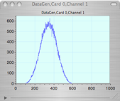
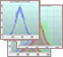

Data Monitor


Helpful Hint.
Click a disclosure triangle to expand or collapse the items below it.
Option-Click a disclosure triangle to expand or collapse all items below it.
To remove an item, click on it and hit the delete key. You can delete an item any time, even during a run. Deleting an item will not affect the data stream, but will close any open plots viewing the deleted item.
Shift-Click or Option-click to select multiple items.
Scripting Hint:
Select a data set and do a Cmd-I to print the name of the dataset as it should appear in a script command. For example: [obj dataSetWithName:”Shaper,0,1,2”];


Not shown in this icon view is the output connector. The connector on the bottom right is a data pass thru--all data records will go on to the next object in the connection chain. The Data Monitor object displays the number of events collected by each object being readout in the Data Task List. By double clicking on certain individual channels (eg., shapers, scopes) a histogram or waveform plot are shown. Clicking on groups of channels (e.g. shaper cards, whole scopes) multiple plots are shown.
Double-clicking a item will open plot for that data if possible. Note that not all items in the data monitor can be plotted. In those cases a double-click will do nothing.
Highlighting multiple items allows you to create a multi-plot and view multiple data sets in one plot window.
Clears all counts. Clears all histogram and waveform plots. Does not affect the data stream.
Ship the final histograms at the end of the run

Note that the ‘Ship Final Histogram’ is of no use unless the data monitor is inline with a disk object. Otherwise the final histograms have nowhere to go.
Disabling cataloging and decoder will not affect the data going to disk -- you just won’t have real-time access to the decoded data.

If selected, the histograms are not cleared at the end of run
This option will write out the final histograms into a file in ascii form.
Enable/Disable cataloging and decoding for best speed and stability.